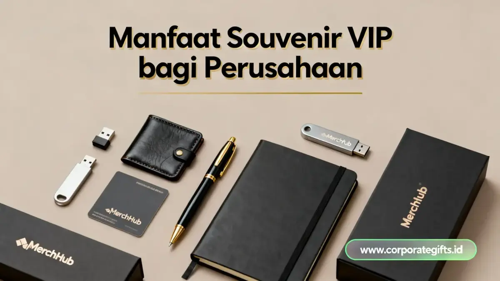

Souvenir VIP perusahaan adalah hadiah korporat premium untuk klien, mitra strategis, dan tamu penting yang dibuat dengan material berkualitas, personalisasi logo atau nama, serta kemasan eksklusif, sehingga mampu meningkatkan kepercayaan klien dan mempererat hubungan bisnis jangka panjang.
Corporate Gifts ID - Berbeda dari souvenir massal, souvenir VIP menekankan kualitas material, personalisasi identitas perusahaan, dan kemasan presentasi yang mencerminkan reputasi brand. Pemilihan yang tepat terbukti memperkuat kepercayaan klien dan loyalitas jangka panjang.
Poin Kunci Souvenir VIP Perusahaan:
- Representasi Nilai: Souvenir VIP merepresentasikan nilai dan reputasi perusahaan di mata klien strategis.
- Material dan Finishing: Kualitas material dan finishing premium menjadi pembeda utama dari souvenir reguler.
- Personalisasi Eksklusif: Personalisasi logo dan pesan korporat meningkatkan kesan eksklusif dan profesional.
- Momen Tepat: Momen pemberian yang tepat memperbesar dampak emosional dan psikologis souvenir.
- Loyalitas Jangka Panjang: Konsistensi program souvenir VIP memperkuat loyalitas klien dalam jangka panjang.
Apa yang Membuat Sebuah Souvenir Layak Disebut "VIP"?
Souvenir disebut VIP ketika kualitas material, tingkat personalisasi, dan presentasi kemasannya berada di atas standar souvenir umum.
Ketiga elemen ini menjadikan souvenir sebagai perpanjangan tangan dari identitas perusahaan, bukan sekadar barang cetak berlogo.
Material dan Kualitas sebagai Sinyal Reputasi
Material premium pada souvenir mengirimkan sinyal langsung tentang standar kerja perusahaan pemberi. Perusahaan yang memberikan souvenir dengan bahan berkualitas tinggi dan desain elegan menunjukkan keseriusan dalam menjaga reputasi di mata klien.
Contoh souvenir dengan sinyal kualitas kuat antara lain padfolio kulit premium, pena logam presisi, dan jam meja custom dengan gravir logo halus.
Detail kecil seperti jenis jahitan atau finishing metal ikut menentukan persepsi profesionalisme.
Personalisasi sebagai Bentuk Penghormatan kepada Klien
Personalisasi menunjukkan bahwa perusahaan memperhatikan penerima secara individual, bukan memperlakukannya sebagai bagian dari daftar massal.
Inisial nama, pesan ucapan khusus, atau ukiran logo pada souvenir memperkuat kesan personal tersebut. Souvenir yang dipersonalisasi juga lebih mudah diingat penerima dibanding barang generik.
Efek ini penting dalam relasi B2B, karena setiap interaksi berkontribusi pada citra perusahaan secara keseluruhan.

Kurasi cenderamata eksekutif berkualitas tinggi dengan personalisasi logo dan kemasan hardbox mewah.
Kapan Momen Terbaik untuk Memberikan Souvenir VIP kepada Klien?
Momen terbaik untuk souvenir VIP adalah saat perusahaan ingin menegaskan nilai sebuah hubungan bisnis, bukan pada momen rutin. Berikut momen strategis yang paling relevan:
- Penandatanganan kontrak kerja sama besar, untuk menandai dimulainya hubungan bisnis penting.
- Kunjungan direksi atau tamu penting dari perusahaan mitra.
- Perayaan milestone kerja sama jangka panjang, seperti ulang tahun kemitraan.
- Apresiasi akhir tahun untuk klien dan mitra strategis.
- Pembukaan kemitraan bisnis baru sebagai kesan pertama yang berkelas.
Mengapa Souvenir VIP Bisa Memperkuat Kepercayaan dan Retensi Klien?
Souvenir VIP memperkuat kepercayaan karena penerima merasa dihargai secara personal, bukan sekadar dipandang sebagai transaksi bisnis. Perasaan dihargai ini secara psikologis meningkatkan kesediaan klien untuk mempertahankan hubungan kerja sama.
Prinsip ini dikenal sebagai reciprocity (resiprositas), yaitu kecenderungan penerima hadiah bermakna untuk lebih terbuka pada kelanjutan kerja sama.
Dalam konteks B2B, souvenir yang relevan juga sering menjadi pengingat positif atas kerja sama yang sudah terjalin.
Kategori Souvenir VIP Apa Saja yang Tersedia untuk Kebutuhan Korporat?
Kategori souvenir VIP dibedakan berdasarkan momen penggunaan dan tingkat personalisasi yang dibutuhkan. Tabel berikut merangkum kategori utama yang relevan untuk kebutuhan HR dan procurement:
| Kategori Souvenir | Cocok untuk Momen | Tingkat Personalisasi | Kesan yang Dibangun |
|---|---|---|---|
| Set Kulit Premium | Kunjungan direksi, tamu penting | Tinggi (nama, logo) | Profesional dan berkelas |
| Jam Meja/Dinding Custom | Milestone kerja sama | Sedang-Tinggi | Kedisiplinan dan komitmen |
| Alat Tulis Berlogo Premium | Event bisnis, seminar | Sedang | Konsisten dan detail-oriented |
| Plakat/Trophy Akrilik Custom | Apresiasi dan penghargaan | Tinggi | Prestise dan pengakuan |
| Tumbler atau Botol Minum Estetik | Apresiasi umum, kunjungan rutin | Sedang | Modern dan peduli keberlanjutan |
Faktor Apa yang Menentukan Keberhasilan Program Souvenir VIP?
Keberhasilan program souvenir VIP ditentukan oleh kesesuaian antara desain, momen, dan konteks penerima, bukan oleh harga barang semata. Empat faktor berikut paling menentukan hasil akhirnya:
- Personalisasi tepat sasaran, mencakup nama, pesan, atau logo yang relevan dengan penerima.
- Kualitas dan desain minimalis modern, agar souvenir tidak terlihat generik.
- Kesesuaian momen dan konteks pemberian, karena waktu ikut menentukan dampak emosional.
- Konsistensi dengan identitas brand, mulai dari warna, desain, hingga kemasan.
Bagaimana Souvenir VIP Berdampak pada Reputasi Perusahaan dalam Jangka Panjang?
Souvenir VIP membangun reputasi jangka panjang karena setiap pemberian menjadi bagian dari cerita bagaimana perusahaan memperlakukan mitra bisnisnya.
Konsistensi dalam program souvenir premium memperkuat brand recall di benak klien dari waktu ke waktu. Dampak lainnya adalah peningkatan engagement klien dan penguatan loyalitas jangka panjang.
Souvenir VIP juga berfungsi sebagai storytelling visual tentang nilai dan profesionalisme perusahaan.
FAQ: Pertanyaan tentang Souvenir VIP Perusahaan
Kesimpulan
Souvenir VIP bukan sekadar pelengkap seremonial, melainkan investasi kecil yang berdampak besar pada persepsi klien terhadap kredibilitas perusahaan.
Pemilihan material, personalisasi, dan momen pemberian yang tepat menjadikan souvenir VIP sebagai salah satu alat paling efektif untuk menjaga hubungan bisnis jangka panjang.
Ingin melihat pilihan souvenir VIP yang sesuai dengan kebutuhan perusahaan Anda? Jelajahi katalog lengkapnya di Corporate Gifts dan temukan opsi yang paling relevan untuk momen bisnis Anda berikutnya.